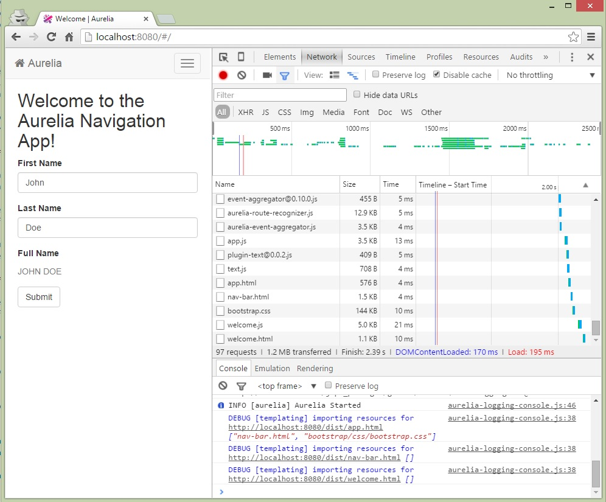
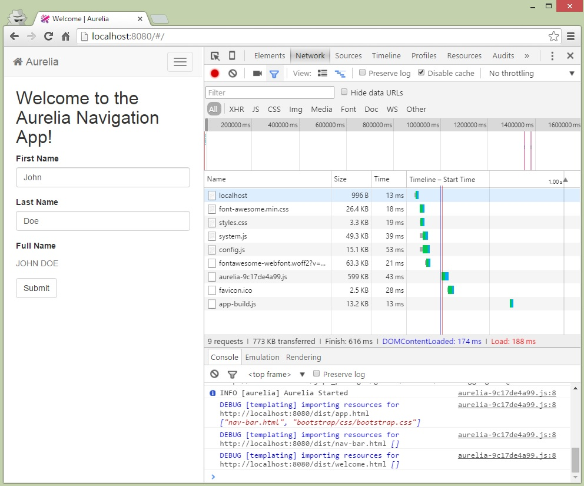

{ "name": "Bundling Your App for Deploy", "culture": "en-US", "description": "Before deploying your app to production, you'll want to bundle the assets for efficient use of the network.", "engines" : { "aurelia-doc" : "^1.0.0" }, "author": { "name": "Ahmed Shuhel", "url": "https://github.com/ahmedshuhel" }, "contributors": [], "translators": [], "keywords": ["Deploy", "Bundling"]
Most of the current major browsers limit the number of simultaneous connections per hostname to six. This means that while six requests are being processed, additional requests for assets on a host will be queued by the browser. In the image below, the Chrome F12 developer tools network tab shows the timing for assets required by the welcome view of the skeleton-navigation application.

As we can see, there are over 95 requests being made to load the first view. While the first few requests are being processed the others are waiting, ultimately taking almost 2.39s on a local machine.
In the past, the most common browser limit has been 2 connections. This may have been sufficient in the beginning of the web when most of the content was delivered in a single page load. However, it can soon become the bottleneck when building rich client applications with frameworks like Aurelia and others.
You may wonder: If this limit can have such a great impact on performance, then why don't browsers give us a higher limit? Most well-known browsers choose not to grant this wish in order to prevent the server from being overloaded by a small number of browsers. Such activity would be similar in nature to a DDOS attack.
This connection limit will not cause slowness in our application if we can manage resources well enough to avoid it. When the page is first loaded, this is the initial request that returns HTML content. When the browser processes the HTML content, it spawns more requests to load resources like JS, CSS and images. It also executes JavaScript and sends AJAX requests to the server.
To make this process efficient, we need to compress the assets and make fewer (possibly less than 6) requests to load everything we need. Fortunately, static resources can be cached and only downloaded the first time. If they cause slowness, it happens on the first page load only and may be tolerable.
Bundling along with minification are techniques that can also be used to improve load time. Bundling and minification improve load time by reducing the number of requests to the server as well as reducing the size of requested assets such as views, view-models and CSS.
We can use Aurelia Bundler to create a gulp task for bundling our app. Let's jump right into it. We will use the skeleton-navigation as our app to bundle. If you don't have that set up. Follow these steps.
Now that we have our app running, let's start by installing aurelia-bundler. To do so cd into skeleton-navigation and run the following command:
npm install aurelia-bundler --save-dev
Now, let's create a bundle.js file in build/tasks/bundle.js as follows:
var config = {
force: true,
baseURL: '.', // baseURL of the application
configPath: './config.js', // config.js file. Must be within `baseURL`
bundles: {
"dist/app-build": { // bundle name/path. Must be within `baseURL`. Final path is: `baseURL/dist/app-build.js`.
includes: [
'[*.js]',
'*.html!text',
'*.css!text',
],
options: {
inject: true,
minify: true
}
},
"dist/vendor-build": {
includes: [
'aurelia-bootstrapper',
'aurelia-fetch-client',
'aurelia-router',
'aurelia-animator-css',
'github:aurelia/templating-binding',
'github:aurelia/templating-resources',
'github:aurelia/templating-router',
'github:aurelia/loader-default',
'github:aurelia/history-browser',
'github:aurelia/logging-console',
'bootstrap/css/bootstrap.css!text'
],
options: {
inject: true,
minify: true
}
}
}
};
gulp.task('bundle', function() {
return bundle(config);
});
Info The bundle function returns a Promise for proper integration into async task engines like Gulp.
With that file in place, let's run the command bellow:
gulp bundle
Here are the things that should have happened after Gulp is finished executing the bundle task:
dist/app-build.js is created.dist/vendor-build.js is created.config.js is updated.Now, if we refresh/reload the app from the browser, we will see much less network traffic. This means that our app is properly bundled.

Just 9 requests tells the story. We have also managed to minimize the size from 1.2MB to just 773KB here.
We can create as many bundles as we want. Here we have created two: one for our application code and another for Aurelia and third-party libraries.
We can create just a single bundle, if we want, that combines both application code and third-party libraries. The number of bundles we would like to have mostly depends on our application structure and the usage patterns of our app. For example, if our app was built in a modular fashion, such that it is a collection of child-app/sections, then a common bundle for third-party libraries and a bundle per section makes much more sense and performs better than a huge single bundle that needs to be loaded up front.
Creating multiple bundles requires us to be extra careful because multiple bundles may contain duplicate modules. Before explaining that, we need to understand how bundling works behind the scenes a bit. Let's consider the example modules A and B below:
When we want to bundle a.js, the bundler will analyze the source code of the module and find the dependencies by tracing the import statements. In this case, the bundler will yield b.js as the dependency of a.js and ultimately place b.js in the bundle.
Let us now take a closer look at the config object. We will skip force and packagePath for the moment. bundles is where we will focus now, specifically the includes.
],
Please pay attention to the pattern [*.js]. The bundler supports some glob patterns like *.js, */**/*.js etc. *.js here means, we are interested in bundling all the js assets in the dist folder (considering the path in config.js). So what does [*.js] mean here? Well, as we know, the bundler will trace the module dependencies from the import statements. Lot's of our code refers to the modules of Aurelia via import statements. For example:
@inject(HttpClient)
export class Users{
heading = 'Github Users';
users = [];
constructor(http){
http.configure(config => {
config
.useStandardConfiguration()
.withBaseUrl('https://api.github.com/');
});
this.http = http;
}
activate(){
return this.http.fetch('users')
.then(response => response.json())
.then(users => this.users = users);
}
}
When the bundler analyzes this file it will find aurelia-framework and aurelia-fetch-client as it's dependencies and include them in the bundle. But the bundler does not stop there. It will recursively find the dependencies of aurelia-framework and aurelia-fetch-client and will go on until there is nothing left.
],
Having *.js in the above config will create a bundle containing lots of Aurelia libraries including aurelia-framework and aurelia-fetch-client. If we consider the second bundle config dist/vendor-build, we have 'aurelia-bootstrapper' and 'aurelia-fetch-client'. aurelia-bootstrapper will yield aurelia-framework. Ultimately, we will end up with duplicate modules in both the bundles.
Our goal is to create a bundle of our application code only. We have to somehow instruct the bundler not to recursively trace the dependencies. Guess what? [*.js] is how we do it.
[*.js] will exclude the dependencies of each module that the glob pattern *.js yields. In the above case it will exclude aurelia-framework, aurelia-fetch-client and so on.
Here is a typical bundle configuration in all its glory:
app-build.js. As the baseURL for skeleton-navigation pointed to dist folder, we named it dist/app-build.dist folder and we have the path rule configured in config.js that points to the dist folder. If we simply specify * all our js modules will be included. We can specify */**/* here if we want to include all the subfolders.*.html!text: This includes all the templates/views in the bundle. The !text tells the Bundler and Loader that these files will be bundled and loaded using the text plugin. *.css!text: Like html templates, we are including all the css here. If you have previously used plugin-css, note that we are not using !css here. The Aurelia Loader uses text plugin for loading css to analyze and do other interesting things like scoping etc.* includes all the JS files in the dist folder. For example, if for some reason we want app.js to be excluded from the bundle, we would write:true, this will inject the bundle in config.js, so whenever the application needs a file within that bundle, the loader will load the entire bundle the first time. This is how we can achieve lazy bundle loading. For a large app with multiple sub sections, this will help us avoid loading everything upfront.true, the the source files will be minified as well.true, an unique revision number will be appended to the bundle file name.true the task will overwrite any existing file/bundle with the same name. Set it to false if you are not sure about it.'.', You can change this if your package.json file is somewhere else other than the base of your app. aurelia-bundler uses this file to find config.js, baseURL, the jspm_packages folder and other important project configuration.At this point, if you are thinking: "Well, this is all good but we have already developed an application that uses Polymer and HTML Imports extensively. We want to bundle them as well." As you may already know, we have created a separate plugin aurelia-html-import-template-loader exclusively for this use case. We have bundling support for that too. This is how we can do it. It's actually a two part process. First let's install the aurelia-html-import-template-loader plugin with the command below:
jspm install aurelia-html-import-template-loader
Now, let's open src/main.js and add this line:
aurelia.use.plugin('aurelia-html-import-template-loader')
After the change main.js should look like this:
export function configure(aurelia) {
aurelia.use
.standardConfiguration()
.developmentLogging();
aurelia.use.plugin('aurelia-html-import-template-loader')
aurelia.start().then(a => a.setRoot());
}
With this little change Aurelia Loader will now use HTML Imports to load all the views. Now, back in our bundle task, we will add a config like this:
We will also change the first bundle a little bit to exclude all the html and css files. Finally our bundle.js file should look like this:
var config = {
force: true,
packagePath: '.',
bundles: {
"dist/app-build": {
includes: [
'[*.js]'
],
options: {
inject: true,
minify: true
}
},
"dist/aurelia": {
includes: [
'aurelia-bootstrapper',
'aurelia-fetch-client',
'aurelia-router',
'aurelia-animator-css',
'github:aurelia/templating-binding',
'github:aurelia/templating-resources',
'github:aurelia/templating-router',
'github:aurelia/loader-default',
'github:aurelia/history-browser',
'github:aurelia/logging-console'
],
options: {
inject: true,
minify: true
}
},
"dist/view-bundle": {
htmlimport: true,
includes: 'dist/*.html',
options: {
inject: {
indexFile : 'index.html',
destFile : 'dest_index.html'
}
}
}
}
};
We have changed the source code (src/main.js), so we need to rebuild our app. The command below should do that:
gulp serve
Info The
servetask is already configured in such a way that it runs thebuildtask first.
Now, let's run gulp bundle from another console/tab. If we now refresh/reload our app from the browser, keeping the developer tools open, we should see the difference.
Warning The order in which the tasks are run is important. The
buildremoves all the files indistfolder. As a result, any bundle file in that folder will be deleted too. This is why we always have to run thegulp bundleafter thebuildtask is finished. If you are usingwatchyou will have to be extra careful here. Every change you make in the source file will trigger abuildtask that clears thedistfolder and any bundles as well.
Let's examine the configuration one property at a time:
view-bundle.html and will be placed in dist folder.true the bundler will treat it as a html import based bundle and Aurelia loader will give it a different treatment as well.! based exclusion. For example:The above pattern will bundle all the views in dist and its child folders except everything in the dist/movie folder.
inject is set to true then a <link rel="import" href="path/of/bundle.html" > will be injected in the body of index.html. If you would like to keep your index.html clean and create a separate index file then you have to set indexFile and destFile.In this article, you've learned both the why and how of bundling. We've covered the bundler library, how to configure it for use with Gulp and demonstrated several different scenarios. To bundle your own app, we recommend that you begin with one of the configurations above and customize it. You may have a small app that makes sense as a single bundle or a larger one that can be broken down into features. Each application is different, but the bundler will help you to create the optimal deployment for your unique scenarios.